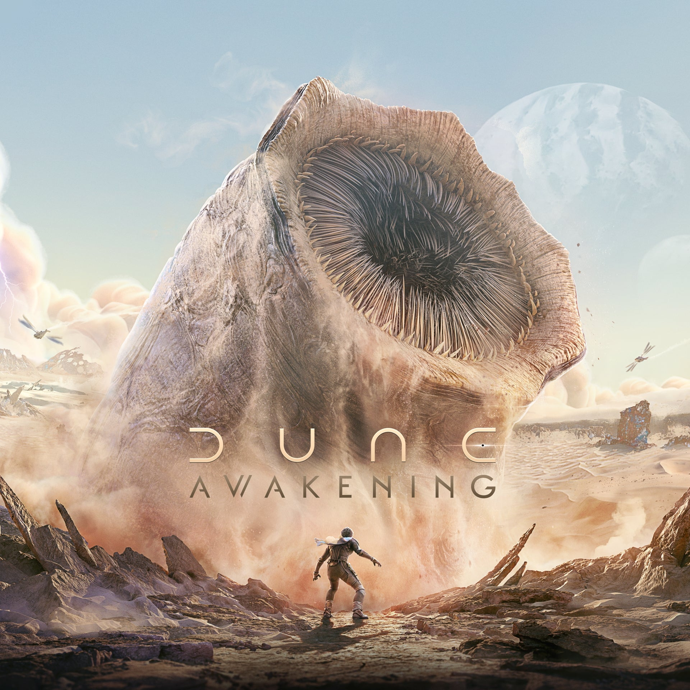
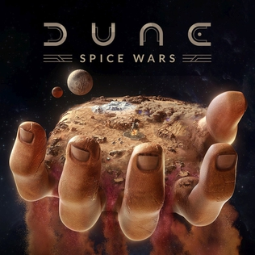

Dune: Imperium
"Dune: Imperium" es un juego de mesa estratégico basado en el universo de "Dune", la icónica serie de novelas de ciencia ficción escritas por Frank Herbert. En el juego, los jugadores asumen el papel de líderes de grandes casas
nobles compitiendo por el control del planeta desértico de Arrakis y sus valiosos recursos, incluida la especia melange. A lo largo del juego, los jugadores deben enfrentarse a desafíos y misiones mientras luchan por establecer su
dominio sobre Arrakis. El juego combina elementos de construcción de mazos, colocación de trabajadores y mecánicas de juego de mesa de estilo eurogame para ofrecer una experiencia estratégica profunda y temática dentro del universo
de "Dune".
Dune awakening
Dune: Awakening combina el valor y la creatividad de los juegos de supervivencia sandbox con la interactividad social de un juego multijugador grande y persistente para crear un MMO de supervivencia en mundo abierto único y ambicioso.
Crea tu identidad y desarrolla tus habilidades, desde la creación profunda de personajes hasta habilidades y destrezas enseñadas por especialistas como Mentats y Bene Gesserit. Declara tu lealtad por lo que vistes y hazte conocido
por lo que haces, ya seas un maestro especializado o un adepto con múltiples talentos. Dune: Awakening da vida a los paisajes épicos de Arrakis. Explora infinitas dunas onduladas, antiguos laboratorios ecológicos subterráneos y profundos
cañones plagados de cuevas, donde los bandidos buscan presas fáciles. Pasea por los bulliciosos pueblos antes de desafiar el profundo desierto sin ley y en constante cambio.
Dune Spice Wars
Frank Herbert fue un escritor estadounidense nacido el 8 de octubre de 1920 en Tacoma, Washington, y fallecido el 11 de febrero de 1986 en Madison, Wisconsin. Es reconocido principalmente por ser el autor de la aclamada serie
de ciencia ficción "Dune", una de las sagas literarias más influyentes y populares dentro del género. Herbert se graduó en periodismo y trabajó como reportero y editor en varias publicaciones antes de dedicarse por completo a la escritura.
Su pasión por la ecología, la política y la filosofía se refleja en su obra, especialmente en "Dune". La creación de "Dune" fue un proceso largo y complejo. Publicada por primera vez en 1965, la novela fue el resultado de años de investigación
y reflexión por parte de Herbert. Inspirado por su fascinación por el desierto y su interés en la ecología, comenzó a concebir un mundo árido y desolado habitado por una compleja sociedad interplanetaria. "Dune" presenta un universo
futurista en el que las casas nobles luchan por el control del planeta desértico Arrakis, único productor de la especia melange, una sustancia vital para la navegación interestelar y que otorga habilidades psíquicas. La historia sigue
a Paul Atreides, hijo del duque Leto Atreides, mientras se enfrenta a conspiraciones políticas, guerras interestelares y profecías mesiánicas en su búsqueda por el poder y la supervivencia en un mundo inhóspito. La saga de "Dune" no
se limita solo a la novela original, sino que se expande a través de varias secuelas escritas por Herbert y, posteriormente, continuadas por su hijo Brian Herbert junto con Kevin J. Anderson. La franquicia ha generado adaptaciones
cinematográficas, series de televisión, videojuegos y una gran cantidad de obras de ficción derivadas. La visión profunda y compleja de Herbert sobre la política, la religión, la ecología y la evolución humana en "Dune" lo ha convertido
en uno de los autores más influyentes en el ámbito de la ciencia ficción. Su capacidad para crear mundos y sociedades complejas, así como su habilidad para explorar temas universales, asegura su lugar en la historia literaria como
uno de los grandes maestros del género.